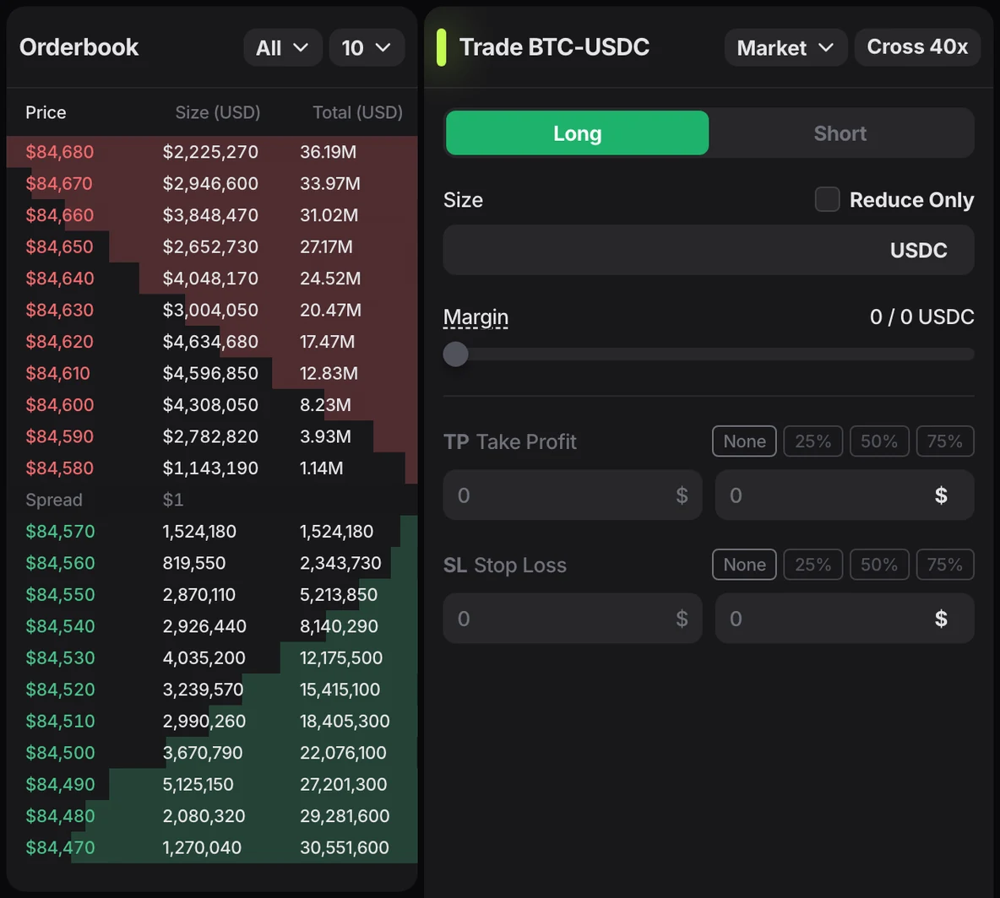
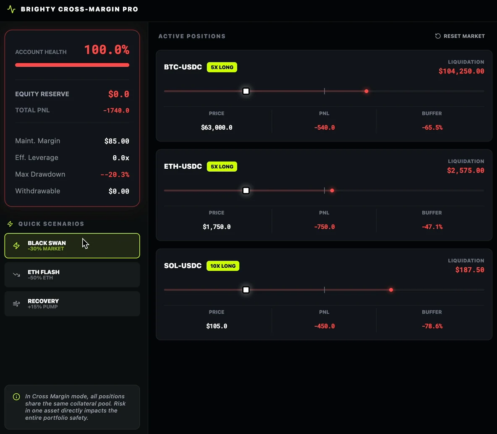
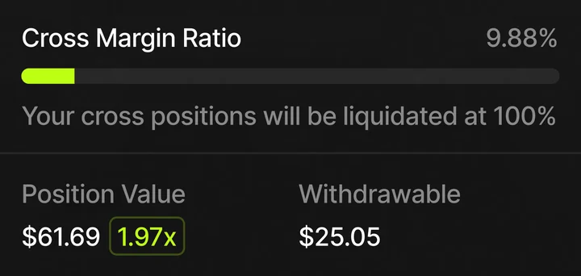
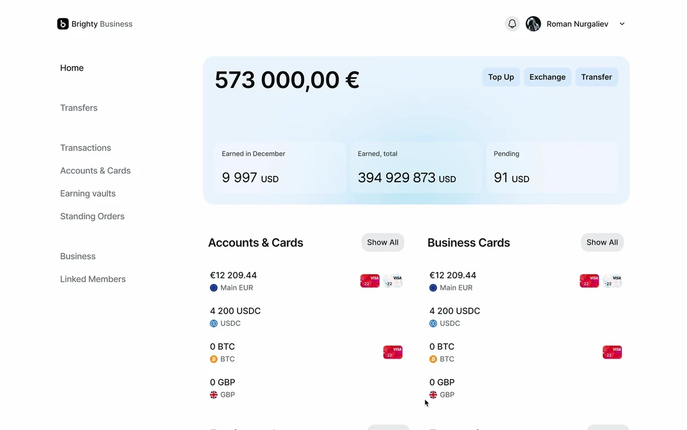
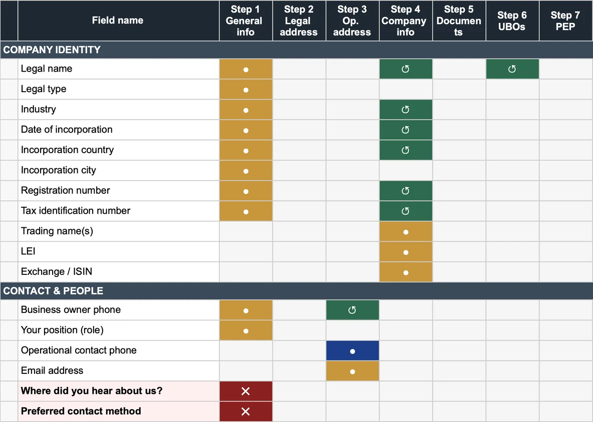
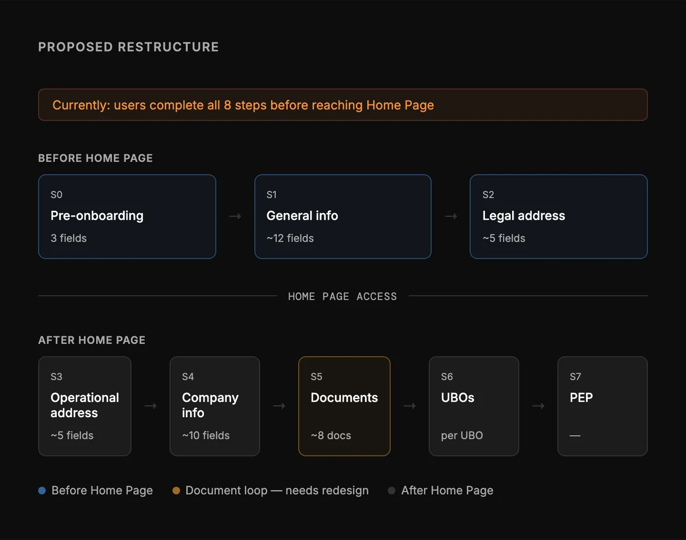

Brighty
Oct 2025–Apr 2026, 7 monthsTrading terminal and B2B onboarding
- Switzerland, remote
- ~20-person company
- One frontend engineer
Overview
Brighty is a Swiss crypto fintech of about 20 people. I was the only designer on two separate products: a perps and spot trading terminal, and Brighty Business, the product for business accounts.
Trading Terminal
In 2025 Brighty launched the terminal to bring a new audience to its core products, on the wave of interest in perps trading. With leverage up to 50x, a small price move can liquidate a position.
- Designed the terminal and took it through public release
- Worked with one frontend engineer through specs and design tokens, and reviewed the build before launch
- Built the design system and the token set used in handoff
- Designed a cross-margin risk simulator with the product owner, who owned the risk model

Cross-Margin Risk Simulator
In cross margin, all positions share one pool of collateral. Traders tend to read each liquidation price as fixed, but a drop in one asset eats into the shared equity and pulls every other liquidation price closer to the market. The simulator lets a trader try a scenario before it happens:
- Each open position is a card with a price slider from −50% to +50%, an entry marker, a liquidation marker that moves with the scenario, and a danger zone
- Presets for common shocks: the whole market down 30%, one asset down 50%, a 15% recovery, and a reset to live prices
- An account-health bar for the cross-margin ratio in three states (secure, warning, danger), with maintenance margin, effective leverage, maximum drawdown, and withdrawable funds
- Two ways in: from the risk tooltip in the terminal, and from the order form, to see how a new order affects open positions before placing it
The product owner defined the risk model; I designed the interaction and the interface. The simulator was designed and prototyped.


Brighty Business
Brighty Business gives companies multi-currency accounts, cards, and transfers. Before a company can use its account, it has to pass KYB, and many never finished it.
- Redesigned KYB onboarding and ran the decision session with the CTO and Compliance
- Benchmarked Brighty Business against six B2B finance products (Slash, Finom, Brex, Ramp, Deel, Papaya) on approvals, roles, and audit

KYB Onboarding
Business onboarding took about 40 minutes on average, per analytics, across eight steps with no point to pause. Businesses entered the same data more than once and had to download, sign, and re-upload provider documents. Support kept hearing that customers were surprised by how much they had to provide just to see the product.
Each iteration pulled in more people while compliance questions stayed open. I mapped every field and document, about 80 across seven steps, marked each one as ask, pre-fill, reuse, or remove, and proposed three changes:
- A two-stage flow: about 20 fields before the home page, the rest after the first login
- Pre-fill for data already collected, such as offering the legal address as the operational one
- Provider documents filled in by Brighty from data it already has, instead of download, sign, and re-upload
I prepared and ran a decision meeting with the CTO and Compliance to turn the open questions into decisions, each with an owner.


Outcome
The terminal shipped to public release, and the risk simulator reached a complete prototype. On Brighty Business, the KYB field map and proposal went to the CTO and Compliance for decisions. My role was eliminated in the April 2026 layoffs.